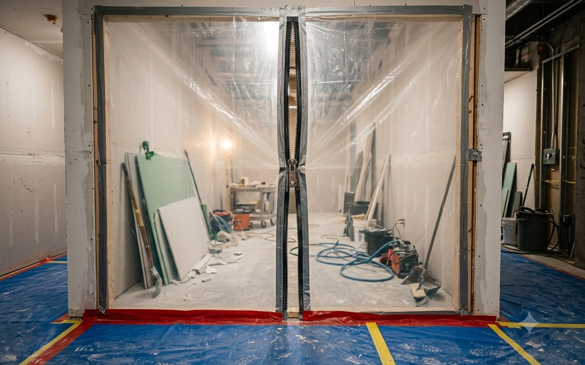
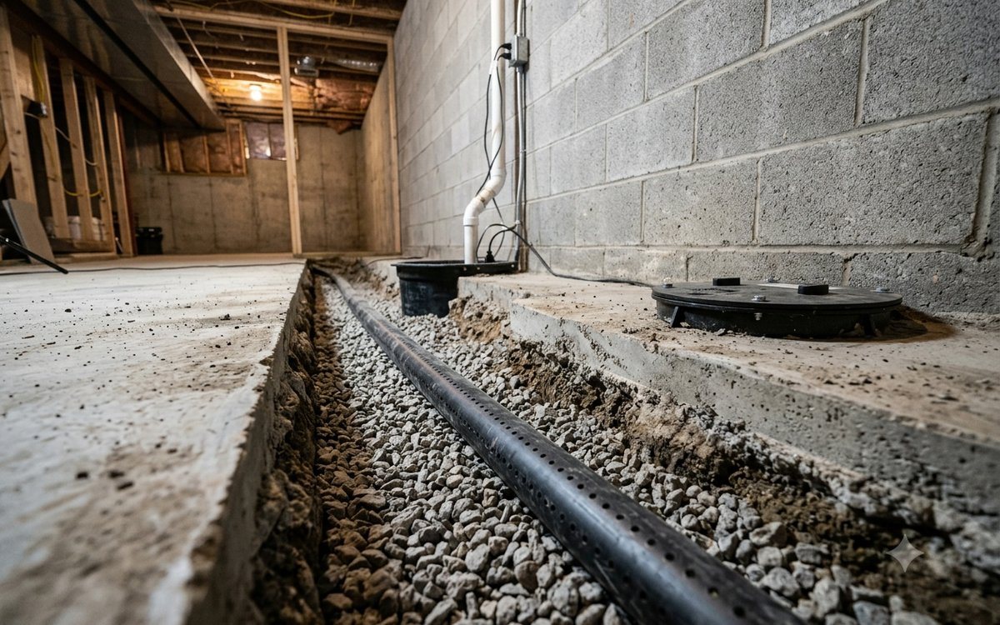

Licensed & InsuredFully covered on every job

Protect your home and your family's health with certified mold remediation, water damage restoration, and basement waterproofing. Free inspections, upfront pricing, and independent lab testing on every job.
From identifying hidden moisture to full remediation and permanent waterproofing, we provide everything your home needs under one roof.

Certified ProcessComplete mold removal following industry-standard protocols, including containment, HEPA air filtration, and safe removal of affected materials. We also correct the moisture problem that caused the growth.
Learn More →
Written WarrantyPermanent waterproofing solutions including interior drainage systems, wall sealing, and sump pump installation, all designed for Georgia's clay soil and backed by a written warranty.
Learn More → 24/7
24/7Rapid response to burst pipes, appliance failures, and storm flooding. We provide water extraction, structural drying, and complete documentation for your insurance claim.
Learn More →
Professional mold inspections with moisture mapping and air and surface sampling analyzed by an accredited laboratory. You receive a detailed written report of our findings.
Learn More →Complete crawlspace encapsulation with vapor barriers, drainage, and dehumidification to protect your home's structure and improve your indoor air quality.
Learn More → Lab Verified
Lab VerifiedIndependent post-remediation testing verifies that mold levels have returned to normal. You receive the laboratory results for your records, insurance, or future home sale.
Learn More →We believe homeowners deserve honest answers, clear pricing, and work that lasts. That commitment shows up in how we handle every job.

Call or request an inspection online. Emergency calls are dispatched immediately, 24 hours a day.
A certified inspector evaluates your home, locates the moisture source, and performs testing where needed.
You receive a clear, itemized estimate explaining exactly what we recommend and what it costs.
We complete the work, correct the water source, and provide lab results and warranty documentation.


We serve homeowners and businesses throughout the metro Atlanta area, with emergency service available 24 hours a day, 7 days a week.
Call to Confirm ServiceWhether you've spotted mold, smelled something musty, or found water in your basement, we'll give you clear answers and a written estimate at no cost.
We'll call you shortly. If this is an emergency, call (470) 760-5249 right now.